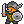
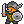

Гайдіус Тоталус 2.0
В гайді викладені мої думки стосовно гри. Якщо ви з чимось не погоджуєтесь чи є зауваження, то пишіть в телеграм чат (посилання є в розділі контактів).
Подяка гравцям Omax, H1dek1, Valleyheart, BIHITAP, Sap1, Lion777 за допомогу в створенні, зауваженнях та наданні корисних порад !
Зміст
1. Класи
 


В Орна існує багато варіантів розвитку вашого персонажа. В цьому розділі ми розглянемо деякі з них.
Основні гілки розвитку класів:
 Витязі (Valor) - Лицарі та
воїни Ліонесу використовують традиційну зброю, важкі обладунки, та б’ються без всяких трюків – все
просто, зрозуміло, та нехитро. Вони добре знаються на виживанні у бою, та вивчають відносно прості
бойові навички.
Витязі (Valor) - Лицарі та
воїни Ліонесу використовують традиційну зброю, важкі обладунки, та б’ються без всяких трюків – все
просто, зрозуміло, та нехитро. Вони добре знаються на виживанні у бою, та вивчають відносно прості
бойові навички.
 Омнімагія (Omnimancy) - Авалон
відомий глибокими знаннями всілякої магії, смертоносної та не дуже. Маги Авалону частіше за все
використовують руйнівні заклинання. Вони повинні вміти зберігати не тільки здоров’я у бою, а й ману
– бо маг без мани дуже швидко перетворюється на ляльку для биття.
Омнімагія (Omnimancy) - Авалон
відомий глибокими знаннями всілякої магії, смертоносної та не дуже. Маги Авалону частіше за все
використовують руйнівні заклинання. Вони повинні вміти зберігати не тільки здоров’я у бою, а й ману
– бо маг без мани дуже швидко перетворюється на ляльку для биття.
Тіньоходи (Shadowmancy) - Аннун – стародавнє королівство, що відоме завдяки своєю обізнаністю на хитрощах та таємних мистецтвах бою. Шахраї Аннуну дуже різкі, швидкі на удар, та орієнтуються на спритність, негативні ефекти та критичні удари. Вони не настільки міцні – відносно інших класів – тому вважається що грати шахраєм трохи складніше ніж іншими класами.
Приборкувачі (Valhallan) - Приборкувачі з Нотрену відомі своєю властивістю майстерно контролювати, підбодрювати, та гамувати своїх компаньйонів. Вони володіють здатністю більш ефективно використовувати не свої навички, а навички свого компаньйона – і через те, грати ними складніше ніж іншими класами.
 Елізійці (Elysian) -
Елізійські призивачі використовують прадавні механіки призову створінь до бою, які бездумно
захищають свого господаря. Через те вважається, що класи призивачів найпростіші для гравця.
Елізійці (Elysian) -
Елізійські призивачі використовують прадавні механіки призову створінь до бою, які бездумно
захищають свого господаря. Через те вважається, що класи призивачів найпростіші для гравця.
 Прадавні боги (The Old
Gods) - Коли герой стане достатньо могутнім, відкриє він силу в собі – силу прадавніх Божеств.
Прадавні боги (The Old
Gods) - Коли герой стане достатньо могутнім, відкриє він силу в собі – силу прадавніх Божеств.
Старці (The Elderred) - це класи, які в минулому вами були відкриті, проте наразі вже недоступні для нових гравців.
Всі класи розподілені на “тіри”, чим вище рівень вашого персонажу, тим вищого тіру клас ви можете придбати. Крім цього більшість класів обмежена по типу зброї і обладунків які вони можуть носити (можете прочитати в описі класу), тому звертайте на це увагу, коли будете переходити на новий клас чи іншу гілку розвитку. У класів є “улюблена” зброя, при використанні котрої ви отримаєте додатковий бонус атаки.
Звичайні Класи купуються за орни. Усі придбані вами класи залишаються у вас. Вам будуть відкриті їх активні навички і ви можете безкоштовно перемикатись між класами, якщо вам буде потрібно. В дереві класів для кожної гілки розвитку - ви можете побачити деякі класи які мають позначку декількох гілок розвитку, це означає, що придбавши клас в одній гілці вам не доведеться купувати його в іншій.
Також, на вищих рівнях, нам знадобляться додаткові класи для корисних баффів. Тому купівлею однієї гілки розвитку класів справа не обмежиться.
Тіри, рівні та ціни класів з посиланням на офіційний сайт:
★T1 - потрібний рівень персонажу 1. Ціна класу 2,5к орн.
★T2 - потрібний рівень персонажу 25. Ціна класу 10к орн.
★T3 - потрібний рівень персонажу 50. Ціна класу 50к орн.
★T4 - потрібний рівень персонажу 75. Ціна класу 100к орн.
★T5 - потрібний рівень персонажу 100. Ціна класу 250к орн.
★T6 - потрібний рівень персонажу 125. Ціна класу 500к орн.
★T7 - потрібний рівень персонажу 150. Ціна класу 2М орн. Крім того з'являється гілка Елізійців, цей клас можна отримати виконавши завдання у НІП Хорус.
★T8 - потрібний рівень персонажу 175. Ціна класу 3,5М орн, для початку гілки Прадавніх Богів ціна 5М, для гілки Елізійців ціна 6М
★T9 - потрібний рівень персонажу 200. Ціна класу 7М орн, для гілки Прадавніх Богів ціна 10М, для гілки Елізійців ціна 11М
★T10 - потрібний рівень персонажу 225. Ціна класу 15М орн, для гілки Прадавніх Богів ціна 20М, для гілки Елізійців ціна 15М
★T11 - автоматично отримують гравці, котрі досягли 250го рівня.
Крім звичайних класів в грі є Зоряні класи. Вони купуються за шарди в гільдії Титаноборців.
Існує по 2 зоряних класи на кожний Т9 і Т10 звичайний клас. Мають свої навички, а також свої плюси і мінуси в порівнянні із звичанийми класами. Гільдію Титаноборців детальніше розглянемо в окремому розділі.
2. Спеціалізації

Так само, як і з класами на певних тірах доступні спеціалізації.
На відміну від класів, між спеціалізаціями неможливо перемикатись безкоштовно. Якщо ви бажаєте змінити спеціалізацію вам потрібно буде кожен раз віддавати орни. Також, при зміні спеціалізації активні навички від неї не зберігаються.
Як і для класів, у багатьох спек є своя “улюблена” зброя. На це теж варто звертати увагу.
Для кожного класу може підходити як одна так і декілька спеціалізацій. Яку саме вибрати - вирішувати вам. Але я спробую навести деякі приклади вдалих спек, та деякі не дуже вдалих.
Популярні спеки :
(Berserker) - гарна спека для воїнів та розбійників. Дасть приріст в атаці, але понизить рівень здоровья.
(Raider) - продовження Берсерка для високих рівнів.
(Bard) - універсальна спека для всіх класів. Дає +ману та чудові скіли - Mage's Dance, Warrior's Dance.
(Charmer) - продовження Барда для високих рівнів.
(Cleric) - спека для магів. Підвищує деф, рез та рівень здоровья.
(Stargazer) - більш “атакувальна” спека для магів.
(Magus) - чудова спека для мага - білше урону, менше мани на спели.
(Maji) - продовження Магуса.
(Beastmaster \ Tamer) - спеки для Петоводів.
Специфічні спеки :
(не дадуть вам суттєвого бусту або, взагалі, непотрібні для вашого стилю гри)
(Seeker) - єдине що дає це дальність огляду. Сумнівна спека, дуже ситуативна. Якщо у вас є два ліхтаря\ока + факел, то вам цього буде достатньо.
(Swashbuckler) - небезпечна спека. Чим меньше у вас деф, тим сильніша атака. Для цієї спеки потрібен специфічний обладунок. котрий буде зменшувати ваш деф. Гарна спека на хай лвлі для класу Realmshifter.
(Duelist) - подвійна зброя (замість офф-хенду також віпон) в поточній версії гри, поки що, виглядає сумнівно.
(Merchant) - +20% до шансу випадання речей.
Спеки ★Т3 - не дают вам гарного бусту, а на лоу лвлах орни важко збирати. Раджу не витрачати на них орни. Якщо ви не будете вибирати спеціалізацію до 100 рівня, то зможете взяти ★Т5 спеціалізацію безкоштовно.
Список спеціалізацій які мають навички, що наносят урон по всім цілям одразу :
★Т3
(Hunter) (фіз) - (Arrowstorm)
★Т5
(Scholar) (маг) - (Chain Lightning), (Natura), (Wildfire), (Winter Wind)
★Т7
(Bard) (маг) - (Mage's Dance)
(Ranger) (фіз) - (Arrowstorm II)
(Magus) (маг) - (Chain Lightning II), (Natura II), (Wildfire II), (Winter Wind II)
(Time Mage) (маг) - (Lacunus)
(Zwei-fencer) (фіз) - (Sweep)
★Т9
(Maji) (маг) - (Chain Lightning III), (Natura III), (Wildfire III), (Winter Wind III)
(Chronomancer) (маг) - (Lacunus II)
(Charmer) (маг) - (Mage's Pavane)
 Перелік усіх спеціалізацій на orna.guide
Перелік усіх спеціалізацій на orna.guide
3. Досвід, орни, золото

На даний момент максимальний рівень персонажу в Орні - 250.
Підвищуючи рівень вашого персонажу вам будуть відкриватись нові монстри, боси, підземелля та можливість придбати нові класи і спеціалізації.
В Орні кожні 25 лвл є так звані “гепи”. Тобто, на 25, 50, 75, 100, 125, 150, 175, 200, 225 рівнях ви будете опинятись в складному становищі і вам буде важко вбивати навіть простих монстрів, не кажучи про босів.
Щоб це подолати вам варто прокачувати ваші обладунки та зброю у кузні (хоча б до 5го рівня), тоді вам буде легше подолати ці “гепи”.
Таблиця потрібного досвіду на кожний рівень
Для швидшого розвитку вам у пригоді стануть :
(EXP potion) - дає приріст експи х2. Падає с рейд босів, також можливо придбати в магазині за 1000 орн.
(Shrine of Wisdom) - дає приріст експи х2. Зʼявляється випадково на мапі.
(Jewel of Growth) - вставляється в зброю, дає *1,01%. Випадає з міміків.
(Monster Tome) - аксесуар. Є декілька видів, залежно від якості дають різну кількість % приросту. Випадають з босів та звичайних монстрів.
(Band of Gods) - аксесуар, який ви отримаєте за виконання квесту в сторілайн ланцюгу. Дає х1,5 приросту експи.
Експу ви будете отримувати майже за все - монстри, боси, проходження підземель, рейд боси, арени.
Один з ефективних способів прокачування і швидкого експінгу це (за спаданням ефективності) :
1. Проходження данжів з босами (only boss - 5 ключів вашого тіру).
2. Вбивство звичайних босів.
3. Вбивство рейдових світових босів.
4. Вбивство кланових босів.
Скоріш за все ви дуже швидко дійдете до 150 рівня - ★Т7. Але і до ★Т7 ви можете використовувати цей спосіб.
Що необхідно знати :
1. Кожний данж та ваш особистий данж - існують на своїх таймерах.
2. Усі бонуси до експи перемножуються.
3. Ви можете не побачити велику кількість данжів на карті, тому що маєте невелику відстань огляду.
4. Бафи (окрім тимчасових) зберігаються на вас до вашої смерті (або до кінця данжа), аналогічно дебафи на ваших супротивниках.
5. Кращий спосіб отримати сувої виклику рейдових світових босів - завершення данжів.
6. Швидкість вбивства та нанесення максимальної кількості урону пришвидшує експінг.
7. Данжи only boss т7 - 13 босів, т8 та т9 - 20 босів, т10 - 22 боса. Проходження т7 та т8 boss only - забезпечують збільшення загальної кількості ключів, т9 - зменшення.
Виходячи з пунктів, що наведено вище, для успішного експінгу вам знадобиться :
1. Дефолтний сет з речами з бонусом до відстані огляду щоб бачити максимальну кількість данжів.
2. Сет для данжів з максимальною кількістю речей з бонусом для експи (дивись таблиці Hidden Info).
3. Проходження данжів під статуєю мудрості та експ склянкою.
4. Набір скілів з яким ви отримуєте максимальне збільшення ваших статів, і можете максимально задебафати жирного боса.
5. Максимально заточені речі щоб забезпечити вбивство босів з одного каста скіла в данжах.
Отже, якщо ви прагнете максимально швидко прокачатися, ваша гра буде виглядати наступним чином - у дефолтному сеті з максимальним оглядом подорожуєте, збираєте статую мудрості, врубаєте експ склянку і заходите у кожний данж, який вам трапляється. Коли данжів немає - вбиваєте босів на мапі. Використовуючи максимально заточені речі (хоча б 7 рівня) вашого тіру з бонусом до експи, забафуєтесь на початку данжу і вбиваєте усіх босів. Коли у вас немає можливості подорожувати - викликаєте рейдових світових босів та вбиваєте кланових босів.
Різновиди підземель розглянемо в окремому розділі.
Золото та орни :
На початку гри фарм орн є одним з найважливіших питань. Тому що недостача орн не дає вам змоги придбати клас вищого тіру, придбати зілля експи, спеціалізації і тд.
Починаючи, приблизно, з 200го рівня орни перестають бути таким дефіцитом. Так, їх все ще буде не вистачати щоб придбати все, але для основних потреб їх буде достатньо.
Спробуємо розібратись як можно швидко нафармити орни на лоу лвлах:
Це фарм босів. Подорожувати навколишнім світом та вбивати всіх босів, котрі з’являються навкруги.
За проходження підземель будете отримувати непогану винагороду у вигляді орн, золота та корисних (не завжди) речей.
Вбивство світових рейд босів, котрих ви можете призивати за допомогою сувоїв призову (Summoning scrolls).
На хай лвл найкращим способов фарму орн та експи є так звані “ендлеси”, це особливий режим підземель, в якому немає кінця (поки вас не вбили).
(Lucky Coin) - золото х2
(Lucky Silver Coin) - орни х2
(Shrine of Luck) - золото х2, орни х2, шанс випадання речей х2
Майте на увазі, що коефіцієнт на підвищення бонусів мають межу - максимальний коефіцієнт 4.
Тому нема сенсу вдягати речі або додаткові бафи, якщо ви вже маєте цей показник.
Порахувати коефіцієнт або перевірити що сумарно дають ваші речі ви можете в Калькуляторі бонусів орни \ золото \ досвід.
Таблиця речей які дають бонуси до досвіду, орн, золота
 Калькулятор бонусів орни \ золото \ досвід
Калькулятор бонусів орни \ золото \ досвід
 Google Docs з калькулятором бонусів. Для використання скопіюйте документ собі на Google
Drive
Google Docs з калькулятором бонусів. Для використання скопіюйте документ собі на Google
Drive
4. Тваринки

В орні існують так звані “пети”. Це ваші помічники в бою. В кожно пета є певний набір атакуючих чи допоміжних здібностей. Залежно від вашого класу та ситуації вам може знадобитись певний пет. Якщо ви вибрали розвиток персонажа по гілці Петовод, то пет буде вашою основною зброєю.
Пети - дуже різноманітні, вибір пета сильно залежить від вашого стилю гри та класу. В кожного пета є певні здібності - будь то атакуючі або допоміжні здібності. Вони можуть дати вам захист своїми скілами, можуть зняти з вас доти, використати та відновити броню або атакувати супротивника.
Згодом кожний вибирає для себе оптимальний набір тваринок під певні ситуації. На хай лвл є певний набір “мастхев” тваринок, які будуть потрібні вам для фарму.
Список тваринок які мають АОЕ вміння :
Т4
фіз - Cactus
Т5
маг - Storm Dragon, Earthen Dragon, Fire Dragon, Ice Dragon, Scruug*
Т7
маг - Fey Dragon*, Alfar Mage*
Т8
маг - Steward Dragon*, Steward Gazer*, Amadan*
фіз - Steward Cactus*
Т9
маг - Ebon Scruug*
фіз - Pollux*
Т10
фіз - Fey Cactus
фіз - Replica Selene
* - івентові або квестові
5. Зброя, обладунки, аксесуари
Для кожного класа в Орна існує певний тип зброї та обладунків. Лише декілька класів на хай лвлі можуть носити змішані комплекти.
Основні характеристики :
Def - фізичний захист.
Res - магічний захист.
Dex - спритність.
Atk - фізична сила атаки.
Mag - магічна сила атаки.
Crit - шанс критичної атаки.
Ward - броня (додаткове "здоров'я").
HP - кількість вашого здоров'я.
Mana - кількість вашої мани.
Майже всі речі в Орна можуть бути різної якості :
Зламаний/Поганий – 0% - 99%
Звичайний – 100%
Хороший – 101% - 120%
Якісний – 120% - 140%
Легендарний – 140% - 170%
Орнатний - 170% - 200%
Якість речі можна перевірити побудувавши будівлю оцінщика, але тільки впродовж доби після дропа шмотки. Будь-яку річ можна оцінити не в грі за допомогою сайта або бота в дискорд.
Чим вища якість, тим кращі характеристики.
Не раджу витрачати ресурси, для покращення речей в кузні, на звичайний шмот. Ресурси доволі цінна штука і далі вам їх буде потрібно доволі багато.
До 10го рівня еквіп можна покращувати в звичайні кузні Для 11го рівня потрібно знайти будівлю Alchemist Для 12го рівня потрібно знайти будівлю Demonologist
Для того щоб підвищити якість речі на 13й рівень (Godforged) треба щоб на вас була одягнена річ 12го рівня та знайти боса з золотою аурою. Вбивши його буде шанс, що річ покращится до 13го рівня.
Також в зброю можна вставляти атрибути різних стихій :
Holy
Dark – самий непотрібний, проти нього більше всього резистів
Earth
Fire
Water
Lightning
Dragon
Arcane
Атрибут вашої фракції, дасть вам +25% урону цим атрибутом та +20% резисту до нього.
Думки з приводу еквіпа :
- Магам потрібен еквіп на Mag та Mana. Офф-хенд скрол чи щит з Ward.
- Воїнам потрібен еквіп на HP, Ward та щит з Ward.
- Розбійникам потрібен еківіп на Atk, Dex та щит з Ward або колчан стріл.
- Усім класам, на хай лвлах, потрібен Ward.
- Якщо будете збирати еквіп в Def, то вас будуть сильно бити маги.
- Якщо будете збирати еквіп в Res, то вас будуть сильно бити фізи.
- Ближче до 200 рівня вже не буде такого різноманіття еквіпу, як на початку гри і ви будете розуміти що вам треба, а що ні.
- “Улюблена зброя” класу чи спеки буде давати вам +5% до урону.
Таблиця бонусів речей з орнами, голдою, досвідом
Зброя, обладунки та аксесуари які мають бонуси на експу, орни, золото та шанс випадіння речей
Таблиця часу покращення речей в кузні (з використанням молотів) :
Таблиця бонусів речей з обтяженнями :
Таблиця відсотків випадіння речей з рейд босів :
6. Завдання
У світі орни ви можете знайти різноманітних НІП та таверни, в яких можете отримати квести.
Також є щоденні квести (активуються автоматично кожний день), кланові квести та квести в вашій мерії.
Виконавши квест ви отримаєте певну винагороду (орни, золото, речі).
Перелік квестів на orna.guide
 Гайд
по сторілайну (ENG)
Гайд
по сторілайну (ENG)
 Google Docs з послідовно розписаними квестами по ланцюгу кампанії.
Google Docs з послідовно розписаними квестами по ланцюгу кампанії.
7. Досягнення
В листі персонажа можна відкрити розділ з досягненнями і подивитись ваш прогрес. За виконання досягнень ви будете отримувати орни, чим вище рівень досягнення, тим більше орн вам дадуть.
На початку гри гарний приріст по орнам і не дуже важке виконання можуть бути у досягнень - Boss Slayer, Frequent Visitor, Master Blacksmith, Master Angler, Quest Seeker, Skilled Herbalist.
Перелік досягнень на orna.guide
8. Бафи
В Орні, як і в кожній RPG, існують скіли, які діляться на:
- бафи — підвищують ваші характеристики
- дебафи — знижують характеристики супротивника
- атакуючі — завдають урон
- D.O.T (damage over time) — тимчасові дебафи
Дебафи:
- Def↓, Def↓↓ — зниження фіз. захисту на 20% та 80%
- T.Def↓, T.Def↓↓ — тимчасове зниження фіз. захисту на 20% та 80%
- Res↓, Res↓↓ — зниження маг. захисту на 20% та 80%
- T.Res↓, T.Res↓↓ — тимчасове зниження маг. захисту на 20% та 80%
- Att↓, Att↓↓ — зниження фіз. атаки на 20% та 80%
- T.Att↓, T.Att↓↓ — тимчасове зниження фіз. атаки на 20% та 80%
- Mag↓, Mag↓↓ — зниження маг. атаки на 20% та 80%
- T.Mag↓, T.Mag↓↓ — тимчасове зниження маг. атаки на 20% та 80%
- Dex↓ — зниження спритності на 20%
D.O.T ефекти:
В Орна доти:
- наносять урон
- не дають супротивнику зробити свій хід
- зменшують шанси супротивника влучити по вас
- дають шанс вам поповнити HP
Гайд по дебафам
Бафи:
В Орна є величезна кількість бафів, які можна отримати через класи, спеки, еліксири, петів або магазин Arcanist.
- Def↑, Def↑↑ — +25%, +50%, +100% фіз. захисту
- T.Def↑, T.Def↑↑, T.Def↑↑↑ — тимчасовий фіз. захист
- Res↑, Res↑↑, Res↑↑↑ — маг. захист
- T.Res↑, T.Res↑↑, T.Res↑↑↑ — тимчасовий маг. захист
- Att↑, Att↑↑, Att↑↑↑ — фіз. атака
- T.Att↑, T.Att↑↑, T.Att↑↑↑ — тимчасова фіз. атака
- Mag↑, Mag↑↑, Mag↑↑↑ — маг. атака
- T.Mag↑, T.Mag↑↑, T.Mag↑↑↑ — тимчасова маг. атака
- T.All↑, T.All↑↑ — всі характеристики
- Dmg↑ — +50% до сили атак
- Dex↑ — +25% до спритності
- Crit↑ — +25% до шансу критичної атаки
Найкращі бафи від класів:
- Druid:
- Bear's Might — Att↑↑, Def↓↓, Res↓↓
- Golem's Fortitude — Def↑↑, Res↑↑, Att↓
- Jinn's Talent — Mag↑↑, Def↓↓, Res↓↓
- Mimic's Mischief — Att↑↑, Mag↑↑, Def↓↓, Res↓↓ (рідко дебафи + отрута/прокляття)
- Wisp's Heal — хіл на 300 HP + знімає доти
- Adept: Barrier II — Def↑, Res↑
- Dragon Knight: Wyvern Speed II — Att↑, Mag↑, Dex↑
- Freyr: Wyrm's Song — T.Att↑, T.Mag↑, Crit↑
- Beowulf:
- Gait of Eir — +50% Res, -90% Att & Def
- Gait of Gunnr — +50% Att, -90% Mag & Res
- Gait of Kára — +50% Def, -90% Mag & Res
- Gait of Snotra — +50% Mag, -90% Att & Def
- Grand Ifrit: Deific Channel — T.All↑↑↑
- Berserker / Raider: Berserk II — All↑, Berserk III — All↑↑
- Magus / Maji: Great Meditation — T.Mag↑↑↑, Great Meditation II — T.Mag↑↑↑ + T.Res↓↓
Рекомендація:
Ближче до 200 рівня рекомендую придбати клас Druid — його бафи значно полегшать бій з босами. Також хороші варіанти: Dragon Knight та Adept. Класи Beowulf та Grand Ifrit — для ендгейму.
Еліксири:
- Якщо не вистачає скіл-слотів для бафів, замініть їх еліксирами.
- Наприклад, замість Barrier II (Def↑, Res↑) можна випити Magic Defense Tonic + Defense Tonic. Результат той самий, але витратите 2 ходи.
- Berserk Mushroom — дає All↑. Рідкісний, краще зберігати до 200+ лвл.
Перелік бафів також доступний на офіційному сайті.
Ward
Роз'яснення від гравця Vovanuas
Ward — тимчасовий щит, що захищає HP. Коли Ward активний частина урону йде у Ward, потім — у HP.
- Активується скілом або навичкою (напр. Ward of Ortanite)
- Поглинає частину урону — на всіх вміннях написан відсоток поглинання (напр. 85%)
- Формула: якщо 1000 Ward та 1000 шкоди — 850 поглинається, 150 йде у HP
- Більший % поглинання переважає менший - наприклад, достатньо 1 раз в бою використати навичку з 100% поглинанням і на весь бій цей % зберігається, незалежно від використання інших wrad навичок
- Діє кілька ходів — по 1 зникає кожен хід
- Ходи варду можна поновити навичкою, яка додає ходи
Як набрати Ward:
- Через спорядження — деякі речі автоматично дають Ward + ходи
- Інкрустація камінців — +1-2% залежно від типу каменю
- Пети — мають скіли для відновлення Ward та % бонуси через бонди
Формула Ward:
((Hp + Mp) / 2) × % Ward від обладунків
9. ПвП (PvP)
Боротьба із супротивниками в Орні реалізована у вигляді:
- захоплення територій
- ПвП Арени у профілі персонажа
- окремих будівель — Колізеїв (їх розглянемо в іншому розділі)
- Гільдія Завойовників - реалізує механіку живого пвп з гравцями
Для участі в ПвП боях вам потрібні Arena Tokens — їх можна вибити з мобів і босів у світі, а також придбати в магазинах.
З реальними людьми можна змагатися, якщо ви особисто викликаєте гравця на дуель через вкладку клану або френдліст. А також в гільдії Мечі Фінесса. Всі інші бої (на арені, в Колізеї, в захисті територій) відбуваються проти штучного інтелекту — збережених копій персонажів інших гравців.
ПвП стає особливо важливим на високих рівнях, де воно необхідне для фарму специфічних речей та ресурсів.
10. Будівлі
- Shop (Магазин): можна придбати зілля HP/MP. Кожні 24 години рандомно генерує набір речей на продаж. Є сенс будувати декілька магазинів біля “домашки” та час від часу їх перевіряти.
- Blacksmith (Кузня): для покращення предметів. Максимальний рівень покращення — 10.
- Bestiary (Звіринець): будиночок з тваринками. Кожні 48 годин рандомно генерує набір тваринок на продаж.
- Inn & Tavern (Таверна): тут можна взяти на виконання квести.
- Dungeon (Підземелля): розглянемо в окремому розділі.
- Jeweller (Ювелір): можна придбати каміння та вставити його в обладунки.
- Alchemist (Алхімік): покращення речей до 11 рівня та вставка атрибутів (вогонь, вода, блискавка, земля) у зброю.
- Demonologist (Демонолог): покращення речей до 12 рівня та вставка атрибутів (дракони, святість, темрява) у зброю.
- Arcanist (Арканіст / Відьма): можна придбати деякі спели.
- Keep (Фортеця): дозволяє зберігати тваринок, має окремий інвентар. При заповненні золотом дає бонуси золота щодня. Поступово відкриває підземелля, алхіміка та демонолога при покращенні рівня. Можна побудувати лише одну.
- Outpost (Форпост): урізана версія фортеці, але їх можна будувати багато й у зручних місцях.
- Bazaar (Базар): аналог магазину з рідкіснішими речами.
- Altar of Ascension (Вівтар Вознесіння): для підсилення персонажа. Коштує 50 млн орн — актуальний для хай-лвл гравців. Кожен рівень дає +1% до всіх характеристик. Потрібні великі об'єми орн, золота та ресурсів. Таблиця з цінами — в кінці гайду.
- Citadel (Цитадель): раз на добу можна забрати рандомну нагороду.
- Wayvessel (Портал): дозволяє подорожувати до друзів. Необхідно бути в паті та мати відкритий портал у обох гравців.
-
Refinery (Завод Переробки): переробляє одні ресурси в інші. Будувати можна 1 на локації, але можна переносити.
Переробляє 10 айтемів на годину, результат випадковий.
- Якість ресурсу (аура на лого) впливає на вихід:
- білі — 0–1
- зелені, сині — 1–2
- легендарні — 1–3
- Coliseum (Колізей): аналог арени, але з проходженням 20 поверхів. В кінці — гарна нагорода. Можна грати в паті — кількість ворогів дорівнює гравцям у паті. Рівень ворогів відповідає ініціатору входу.
- Town Hall (Мерія): дозволяє брати квести.
- Residence (Резиденція): підвищує популяцію в мерії, що збільшує бонуси.
- Oracle Temple (Храм Оракула): один раз на добу можна отримати мнемонік для запуску спогадів.
- Herbalist (Травник): для приготування різних зіль.
- Fishing Hut (Рибацька Хатинка): обмін риби на корали. Також продає унікальні товари.
- Tower of Olympia (Вежі Титанів): контент для гравців Т9+.
- Titan Workshop (Майстерня Титанів): необхідна для будівництва Веж, а також для розблокування особливих класів та зброї.
- Monuments (Монументи): “міні-вежі”, де можна зустріти івентових мобів та отримати баф на 2 години після проходження.
- Marketplace (АТБ): прокачаний магазин. Можна побудувати лише один. Дозволяє купувати ресурси.
11. Гільдії
У грі Орна існує кілька основних гільдій, кожна з яких пов’язана з певною активністю або видом контенту. Приєднання до гільдій дозволяє відкривати будівлі, рецепти, функції, класи та інше.
- Гільдія Титанів: призначена для гравців, які займаються контентом Веж Титанів.
- Гільдія Мечі Фінесса: орієнтована на PvP-гравців.
- Гільдія Спелеологів: спрямована на гравців, які активно проходять данжени.
- Гільдія Мандрівників: фокус на подорожі та мобільність.
- Гільдія Коло Страждань: пов’язана з просунутим PvE-контентом. Часто використовується на хай лвлах.
- Гільдія Риболовів: відкриває можливості в рибальстві — обмін риби на ресурси, бафи тощо.
- Гільдія Монументів: для гравців, що займаються проходженням монументів та отриманням бафів.
- Гільдія Оракулів: доступ до храму оракула та використання мнемоніків.
Ціни ресурсів по гільдіях:
Гайд по гільдіям
12. Підземелля
Підземелля — це окремі будівлі на мапі Орни, в яких можна зустріти різноманітних супротивників. Для входу потрібні ключі (Gauntlet Key), які випадають із босів у світі або самих підземеллях.
У підземелля можна ходити соло або в паті. Тір підземелля буде відповідати найменшому тіру серед гравців у паті.
Підземелля Т8 — найефективніші для фарму ключів у паті. При вході ви можете вибрати тір, але не вище вашого.
Режими підземель:
- Звичайний: стандартний прохід, без налаштувань
- Орда: на поверхах буде кілька ворогів замість одного
- Бос режим: всі поверхи заповнені босами
- Хард мод: неможливо використовувати зілля
- Нескінченний (Endless): режим без кінця, підходить для фарму орн та експи на хай-лвлах
Ці режими належать до звичайних підземель. Тематичні підземелля мають інші правила, які розглянемо нижче.
Деякі режими можна комбінувати між собою для підвищення винагороди.
Після введення гільдії Копалень було змінено вигляд і прохід підземель “Містична печера” та “Фортеця гоблінів”: вони тепер працюють за системою, схожою на Вежі Титанів, і крім боїв дозволяють добувати кристали для обміну на гільдійську валюту.
Таблиця винагород за проходження підземель:

Таблиця спавну босів по поверхах:

Для ефективного пошуку підземель можна одягнути аксесуар Unfelled Concord, який зменшує час відкату. Його можна отримати за виконання сюжетного квесту на Т10.
Огляд видів підземель:
| Назва | Мін. тір | Складність | Бонус | Ціна (ключів) | Типи мобів | Підходить для |
|---|---|---|---|---|---|---|
| Фортеця гоблінів | 3 | Нормальна | Золото | 1 | Гобліни, орки, кобольди | Жетони арени, золото |
| Містична печера | 3 | Нормальна | Орни | 1 | Магічні | |
| Лігво звірів | 4 | Нормальна | Орни | 1 | Тварини | |
| Гніздо дракона | 5 | Нормальна | Орни | 2 | Дракони, драконіанці | |
| Портал хаосу | 7 | Жорстока | Предмети | 5 | Погодні, день/ніч | |
| Підземний портал | 9 | Важко | Предмети | 5 | Сили Балора, фоморіанці | Сувої виклику |
| Поля битв | 8 | Важко | Предмети | 5 | Nothren, Lyonesse | |
| Долина Богів | 10 | Жорстока | Предмети, орни | 20 | Піднесені |
Оригінальна стаття з описами (англійською):
Перейти до офіційного гайду по підземеллях
13. Івенти та Рейдбоси
Щомісяця в Орні запускаються івенти з різноманітними активностями, бонусами та унікальними рейдбосами. Це гарна можливість отримати більше досвіду, орн, речей або взяти участь у кооперативному контенті.
Перелік актуальних івентів на поточний місяць доступний тут: Актуальні івенти на playorna.com
Типові бонусні івенти:
- Івент на Орни: +25% до здобутих орн
- Івент на Досвід: +20% до досвіду
- Івент на Шанс Випадання: +25% до шансів здобуття предметів
Івент "Іншовимір"
Іноді в Орні проходить особливий івент — Іншовимір.
- У ньому з’являються випадкові Рейдбоси.
- Щоб отримати максимальну нагороду, потрібно завдати кожному босу x10 його HP.
- Увійти можна через фіолетову кулю у листі персонажа (справа зверху).
- Увійти можна лише під час активного івенту. Якщо івенту немає — кулі теж немає.
- Один вхід триває 2 години, після чого вас автоматично викине.
- Наступний вхід можливий через 4 години.
Кланові храми
У кожному клані є спеціальні храми, які можна активувати самостійно.
- Після активації, храм запускає подію для всього клану.
- "Відкат" на наступний запуск — приблизно 4 дні.
- Для повторного відкриття храму потрібно дослідити його.
- Дослідження храмів відбувається за кланові флоріни (червоні монети в статистиці клану).
- Флоріни здобуваються шляхом виконання кланових квестів.
Рейди
У грі є декілька типів рейдів, у яких можуть брати участь як соло-гравці, так і клани:
- Щомісячні Рейдбоси: глобальні боси, доступні всім гравцям.
- Сувої призову: дозволяють викликати унікального босса для бійки, часто використовуються для прокачки або фарму предметів.
- Кланові Рейдбоси: викликаються лідерами або офіцерами клану для всієї команди. Є обмеження на кількість викликів та період відновлення.